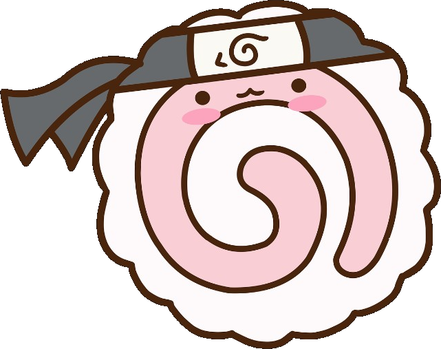

Para:
Maria Fernanda!!
Con cariño
Felices 26 Créelo!
木ノ葉隠れの里 Aldea de la Hoja
26
Hay momentos en la vida que marcan el comienzo de una nueva etapa.
Hoy no solo celebramos tus 26 años; celebramos todo lo que has superado,
todo lo que has aprendido y, sobre todo, todo lo que todavía te queda por vivir.
Como nos enseñó Naruto, no importa cuántas veces caigas. Lo importante es encontrar la fuerza para levantarte
y continuar avanzando por tu propio camino.

火の意志 Voluntad de Fuego
Cumplir 26, un nuevo año,significa tener más experiencias, más fuerza y una mejor idea de quién quieres ser.
Tu camino todavía tiene muchas aventuras, sueños por alcanzar y momentos que aún no puedes imaginar.
No olvides todo lo que has sido capaz de superar.
Incluso cuando el camino se vuelve difícil, siempre existe una razón para levantarse una vez más.
Como Naruto, que nunca permitió que sus circunstancias decidieran quién iba a ser.
Tu pasado explica de dónde vienes, pero no decide hasta dónde puedes llegar.
Trata de levantarte, porque puedes! Brillas!! aunque hayan fallos en el camino.
Nunca tengas miedo de perseguir aquello que realmente quieres.
Naruto comenzó siendo alguien a quien muchos no creían capaz de convertirse en Hokage.
Pero siguió avanzando porque decidió creer en su propio sueño.
No necesitas que todos crean en ti. Primero tienes que creer tú. Ps Confia en ti primero!
Tu historia no tiene que parecerse a la de nadie más.
Recuerda que vas a tu ritmo, y seguro llegaras a donde te propongas
A los 26, no tienes que tener la vida completamente resuelta.
Puedes cambiar de dirección, comenzar de nuevo, descubrir nuevas cosas y construir poco a poco, paso a paso
la vida que quieres.
Tu camino es tuyo. Camínalo a tu manera.
Sello
Hay palabras que no necesitan un jutsu para llegar al corazón.